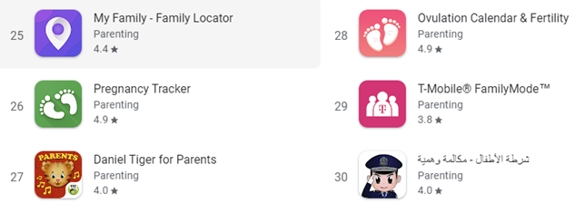

To gain a better understanding of the IT industry Team Phoenix were tasked with developing a technical project. After considering industry needs, group interests
and preexisting skillsets it was decided that an android app would be created. “Parents Pantry” (PP) will be an interactive mobile app that runs off various data sets
which filter and presents activities to the user that they can do with their child based on user inputted data.
Due to the financial and time constraints functioning databases will not be created and the focus will be on other foundational aspects of the app such as information for
the data bases, wireframes, mockups and project planning for the future evolvement of PP.
To better understand the current market and any possible gaps a comparison was made with parenting apps on the
google play store. The top 45 grossing and free apps were listed and further categorised. Table 1 compares the findings and highlights the most popular subcategories.
| Sub-category | Total apps |
|---|---|
| Pregnancy and fertility | 13 |
| Sleep, growth & development tracking | 13 |
| Parental controls | 11 |
| Baby monitor | 6 |
| Co-parenting | 6 |
| Services eg. childcare, school, babysitting | 5 |
| GPS tracking | 4 |
| Language and education | 4 |
| Photo sharing | 4 |
| Mental health and parenting advice | 3 |
| Solids, baby led weaning and nutrition | 3 |
The information found demonstrates a clear gap and need for an app like PP. The main motivator for creating PP is to meet social needs and help parents and users who may otherwise struggle to support their children in play-based learning. “Play based learning requires support from others and helps children grow by accepting responsibility for their learning. It still requires guidance and feedback from others and promotes opportunities for children to learn, develop critical thinking skills, become agile, work independently” (DoE 2022) While play based learning is important, some people are not confident or familiar with these activity styles. PP will provide guidance and ideas in a convenient setting. On the surface PP is a simple app that is like other recipe and cocktail building platforms which are later explored in the scope and limit section of this report. Being the first of its type on the market is another huge motivator for this project.
Parents Pantry began after noticing a gap in the market. The idea is simple, an app that filters activities and then provides recommendations on what you can do with your child. The concept was inspired by recipe and cocktail building platforms, the use of this technology is yet to be transferred to the parenting market. The most similar platform is the Difford's cocktail guide website. The website for Diffords is easy to navigate and allows users to add items to their “cabinet” and recommends recipes, An overview of the Diffords website. At conception the idea lacked technical knowledge and nuance. The aim was always to create Parents Pantry as a functional app, so the below steps were taken.
Having a clear understanding of the project's purpose is important. The initial concept was revisited, and it was determined that this would remain unchanged. The purpose of the app is to provide tailor made activity recommendations to the user based off the information they supply.
The types of information that would be required were broken down into the following:Once this information is received the user will get a list of relevant activities. At this stage of planning goals and scope had not yet been decided and items listed reflected ambitious plans that would need to be re-evaluated
After establishing what was needed from the user and what would be provided to the user in return the next stage of planning began.
On a surface level the app is simple. There will be a large data set that is filtered and presented to the user. The key to an app like this being successful will
be making the app user friendly and visually appealing and to have a data source that is always growing with additional activities being added on a frequent basis.
It was important to understand the apps features and what would be needed to create them.
Login and children’s details: Databases will be storing a user’s log-in details, their own personal details as well as their children’s will need to be entered and stored, such as name, age, number of children.
Materials and pantry items: Additional databases will be added to hold inventory items related to a specific user, containing user-inputted information such as
materials and pantry items.
App storage: To store user information and host the mobile application itself, a remote server will ideally be required in some form. A PaaS-based hosting platform
will likely be the best for the scope of this mobile app, as it reduces coding time and allows for easy, focused mobile development. This means the host will also be
handling the physical servers, storage, operating systems, networking firewalls and security. The local internal storage of the device will also be taken into consideration
to handle temporary information and will be purged or reset each time the user logs out of the app. This will likely relate to user-inputted searches and filters, such as
environmental factors.
App design: Wireframes and mock-ups will be necessary to facilitate the development of the app. The actual User Interface and creation of the app will be a combination of
HTML, CSS and JavaScript. To optimize the User Experience, user testing will be crucial to implementing an intuitive and easy-to-use UX.
A in depth overview of the planning timeline can be found below. Prior to establishing the project timeline, the scope, goals and aims of the project were defined. The timeline provided clarity on what needed to be decided and completed and when that would be due.
At this stage of planning a timeline was in place, the next step was deciding on what software and technology would be required to create parents pantry. William had taken responsibility for the User Interface design as he is experienced in this.
Database and storage: Utilising a database scheme that involves interactions between separate databases would be ideal and therefore isolates one solution: relational databases. This is one where separate, yet related data points are stored and provided access to and remains an intuitive, straightforward way of representing data for our purposes. The way this works is that information is stored in tables, where each row is a record with a key that is unique to that row. The columns represent data attributes, for example, accounts, usernames, passwords or category, activity, length of time and so on. Through a relational database, data can be stored efficiently whilst being easy to read. The decision was made to use Oracle with MySQL.
These three main criteria are imperative to consider when choosing how to store a database, as investing more in different areas will have different effects.
For greater performance, like with runtime speeds, more RAM will be the solution, or for improvement in processing speed and power, investing in more cores would be the answer.
Above all, the primary thing to consider is scalability - to guarantee that future growth is being adequately supported, its technological foundation
will need to take steps to ensure it keeps up with the demand. This will not only maintain current users but aid in gaining more, when “users have high expectations,”
and will expect our product to operate “fast and seamlessly” (Soucoup and Buck, 2022).
This will depend on a few considerations. The number of users being one, where a proposed scaling method was an additional 1-2 GB of RAM for every 5 new users.
In addition to having enough RAM to accommodate the rate of growth, we should have enough to also take into account the amount of software on one server.
Again, the greater the count of RAM and hard-drive space, the smoother they will run.
Another consideration is how often data needs to be updated, requiring the hardware necessary to accomplish set goals. In this case, data needs to be changed on demand,
at the user’s request, in the form of adding an activity, subtracting an item or getting a suggestion. This plays into one of the higher priorities - the size of the database.
This directly impacts the design process in that it helps determine the configuration of hardware, such as how much processing will be needed.
This contributes towards meeting the desired performance and needed physical amount of disk space.
Since “the processing logic and data storage occur between the client-side and server-side,” (Litvinov, 2021) the process will have to be divided up to take place in separate instances. One instance occurring on the user’s local device and one occurring on the remote server. This means that the local internal storage of the device will also be taken into consideration to handle temporary information and will be purged or reset each time the user logs out of the app. This will likely relate to user-inputted searches and filters, such as environmental factors. The core of the app will depend on the software algorithm that takes the aforementioned factors and creates suggestions for the user based on them. This will essentially be a user-initiated search with applied filters from both user account data and user-input data. The search will scan another database that contains suggestions with related filter keys. This part will require an algorithm coded with a language that can talk to databases.
App choice: Deciding what type of app to create was important. Once the scope was determined it was clear that there would not be enough time or resources within the group to create an app for both Android and iOS. Given androids dominance in the global market as seen in figure 1 the decision was made to focus on an android app and to roll out a iOS app in the future state of Parents Pantry.
Source: Lariccha 2022
Design Choices: To create the wireframes and mock-ups Adobe XD was chosen for the prototype stage. Given the cost a more affordable alternative such as Proto.io may be considered for further development. A clean and simple user interface would be important as the aim of the app is to help parents spend less time searching on their phones. To optimise the User Experience, user testing will be crucial to implementing an intuitive and easy-to-use UX. Feedback from testers throughout the entire development cycle will be necessary to ensure the app is built to a publication standard.
Once decisions had been made on what tools and technology would be used each goal was assessed and the project scope was revisited.
This was done frequently to avoid scope creep and to ensure that each member stayed on track with the project. Due to unforeseen events which are later explained in “7.0 Group processes”
The project needed to be scaled down.
Creating a branding kit was one of the first tasks completed. See Here.
When researching the google play store earlier in the project, it became clear that most apps go one of two-ways design wise.
Developers either choose to go minimal and simple with the design or gimmicky cartoon characters are often chosen. Figure 3 is a screenshot of some app icons for example.
To align with the simplistic values that has been established at conception a minimal app was decided on.
Source: Google Play 2022
A wireframe and mockup were then completed. At this stage it was clear that having both ”Materials” and ”pantry items” was not necessary for the user and both options
could instead be stored in the pantry. This allowed for less clutter on the app. After the wireframe was completed an app prototype was created.
The app prototype is linked on the group website and a copy of the wireframe can be found on the website and in Appendix J
Due to time and resourcing the database was not able to be completed during the initial stages of the project. Starting the database is the next step in the project.
In the initial stages of the project specific roles were defined for each member. To establish the relevant roles the following was taken into consideration
This IT project is being created for Team Phoenix to create an Android mobile app. The project will include creating a basic app prototype and the foundations for the database. Project deliverables include a brank kit, wireframe, timeline, prototype, website, presentation and research surrounding what will be included in the database. The project will not include a fully functional database or additional features like step-by-step instructions and graphics. Constraints will likely include communication issues, lack of budget and limited technical skills. The initial project submission will be November 30th will a timeline to be planned until December 30.
Table 4 provides an overview of the tools and technology to be utilised in this project. The table includes all software that is anticipated to be used throughout the project. Oracle attracts the highest price point which is why MySQL workbench has been included as a free alternative. All other tools have both free and paid for services. In the early stages of this project free software will be used when possible. Once Parents Pantry grows the software requirements will expand and there will be costs involved.
| Tools Used | Purpose | Experience |
|---|---|---|
| Canva Pro Teams | Brand kit A5 presentation |
JD had previous experience using Canva for personal projects such as social media and event invitations and planning. |
| Adobe XD | Wireframe and Prototype Development | William has had previous experience using Adobe XD for previous coursework |
| Lucidchart | Sitemap | William has had previous experience using Lucidchart for previous coursework |
| MySQL Workbench 8.0 CE | Database | N/A |
| Java SE Development Kit 19.0.1 | App Development | N/A |
| Oracle Database 19c | Database | N/A |
To ensure that our app is developed to a highly functional standard, testing will commence as soon as the minimal viable product is achieved.
This will range from initial feasibility studies to advanced beta testing to allow for feedback that can provide guidance with the late stages of development,
giving insight to what final tweaks need be made to the final design. This phase of testing also helps iron out any bugs that would be easy to fix during the earlier stages,
rather than during the launch of the finished product. Deploying frequent testing throughout the development cycle will also ensure that any patch fixes won’t also create new
bugs while trying to fix old ones.
Our first release will see that a limited number of volunteers will be able to test the app before submitting a questionnaire – a combination of testers from our target
audience and with experienced testers would be ideal for invaluable feedback. These people can be found online - one way to attract interest is via a dedicated landing page,
where individuals may be able to register, download and provide feedback. Sending emails to such users in a redundant fashion will aid in keeping their engagement also.
From here, we may also gather potential testers simply from friends and family, and by extension, their friends and family or from already well-established beta tester
communities such as Reddit or UserTesting. Budget permitting, a targeted advertising campaign may also generate traffic for testers and even the potential user base. W
ith future prospects considering expanding our current development team, the scale of our project can be considered small, which would require a minimum of 10-15 beta testers,
and an additional tenfold for if we saw considerable growth (Rachlin, 2022). Of course, this number can vary depending on what part exactly we are testing.
Testing would have to be sectioned into trials for different aspects of the app, breaking up the process into discrete tasks so that testing teams can provide
specific and targeted insight. For example, a limited assessment for the graphics rendering of the interface, or a trial that focuses on the database logic and optimization.
These can be categorised into beta testing, software testing, usability, functional and performance testing, just to name a few, or for other aspects which test security,
design and compatibility. Recognizing which areas we want tested at the time will determine what sort of feedback we wish to receive, which in turn also controls how many and
what sort of testers we want. “Depending on what your app is, you will only benefit if you are associating with the relevant beta testers” (Rachlin, 2016).
Seeing as the Parents Pantry is directed for parents, we should seek out particular people that are partnered or single parents, child carer’s, nannies and babysitters
of all ages, rather than young couples or truck drivers, for example.
To determine how successful these tests would be and effectively measure our success, certain metrics would need to be ascertained.
This would provide answers to questions such as are these tests cost-effective to perform, do they contribute to the goals and milestones of the team,
are they useful in debugging and are they comprehensive enough to expedite a final product? Throughout each phase of testing, such aforementioned questions
would need to be weighed to justify current systems of testing or necessitate the change of them.
Upon the extension of a further 10 weeks of development, the planning and research aspects of the app should have been completed at this stage and stand ready to
provide a thorough foundation to build on. A length of one to two weeks dedicated to business analysis and acquiring knowledge of app development, databases,
graphics and User-Interface design, as well as necessary tools to help create these. In addition to week one, individual sections of team profiles had to be near-completed –
that of personal information which had to be uploaded from assignment one or two, depending on new team members, and at least a start on a career plan. Group processes
were also finished at this time.
This furthermore encouraged the design and pre-development stage to commence towards the end of week two and heading into week three. This stage should also have seen the sole
development of other design elements, such as researching and deciding colours, fonts and images, creating the layout for the UI, and compatibility and accessibility assessments.
Some of these achievements are evidenced by the upload of a style guide, application sitemap and a wireframe.
Week two progress had to be shared with the construction of a script draft and storyboard that was to go towards the creation of a video for assessment five.
Simultaneously, the first draft of the project report was scheduled to be completed by this week to allow for a plentiful amount of time for review and rewrites,
however required postponement until the end of week five.
Progressing into week three, the primary focus for the project should have been the development of a fully functional prototype and initial user trials to gain
feedback on design properties. This was also initially the week to produce the written draft for the assessment and assume review and edits, as well as commencement on
less prioritised parts, such as career plans and the section on jobs and skills. This week also saw the beginning of website optimization for this assignment.
Thus, the continuation of our development cycle beyond the dedicated assignment timeline will see the actual development of the app,
involving the coding and the most intense stage of user-testing. The team involved in this segment should focus on three main areas of development –
UI design, front-end development and back-end development. This will be the lengthiest phase of the project timeline as it’s the period which will likely encounter
the most issues, soaking up weeks five through to ten.
The final two of four weeks preceding launch will have a heavy emphasis on further intense testing and corrections to ensure the app is working as
intended and remains bug free. This is also the prime opportunity to submit the app for review in the Google Play Store for it to go through a
screening process and accept Parents Pantry on the store.
Finally, this all leads to the second-last of fifteen weeks of development, giving room for finalising everything and the eventual release to the public.
Week fifteen itself will be dedicated to monitoring post-launch statistics and activity and providing support and maintenance.
This is a necessary and crucial step for ensuring the success of the Parents Pantry, as well as providing insight into future marketing strategies to further promote and
increase app’s overall success, as well as potential updates.
Designing, developing and launching any software, let alone a mobile application, comes with its own set of risks and challenges,
and as a first-time development team, we are bound to encounter any number of problems concerning the code itself, maintaining the app or even gaining traction for the idea.
A significant risk lies within enabling the core functionality of the concept as is, with limited collective knowledge and experience of databases
and their coding languages. For this app, the agreed form of information storage was a relational database using MySQL as it’s supporting language,
however, the danger lies therein of the learning capability of the individual programmer and their ability to apply their knowledge to the environment of our app.
This as well, leaves the optimization and modularity of the app to the skills of a novice, which also extends to the coding of the frontend of the app.
The decision for MySQL, too, may be an uninformed choice as we might find that we are unable to create a suitable algorithm for the purposes of this app,
nor may we find it suitable in general, for the coding of the backend. This extends to the front-end development of the Parents Pantry too, where we can only find
whether our choice of coding language is suitable or maintainable for our purposes.
Today’s apps are held to a high standard to make for less complicated and easily maintainable software, with less bugs and errors, and the Parent’s Pantry should be no different.
Bugs are always an unexpected expectation, but with better, higher-qu
them, reiterating the importance of a skilled programmer. The initial base of this app was to be built native to Android devices, which again reduces
the complexities that would arise from cross-platform support. Should development ever consider the latter for whatever reason, this would mean attempting
to port the app over to non-native systems or rebuilding the concept from scratch, so that it remains native to iOS, for example. Both the education and extension
of the app would be costly in both time and money, especially considering the difficulties of scheduling the time needed to learn into the project pipeline.
Such a factor should be omitted from the project entirely and operate on the foundation of already acquired skills, meaning the undertaking of a course or hiring of a professional.
Potential consequences may arise that are even out of our control, especially with the intention to rent third-party hardware, such as cloud servers,
where hosting businesses may encounter price increases, environmental disturbances, and even bankruptcy and closure.
Another risk with a mobile project is the marketing aspect of promoting the app, gaining and maintaining users. With a limited budget,
only so much can be done to stimulate a user base and a lot of efforts may require going unpaid. This could include social media posts,
reaching out by word-of-mouth, or devoting an amount of the budget to obtain advertising space. However, should we fail to utilise such
methods of advertising effectively, the number of new customers remains at risk. Furthermore, there is no guarantee those consumers will
stay if certain features or the app itself is not up to standard. After launch, a big emphasis should be placed on gaining traffic for our app and maintaining active users.
A key component to any software or business is security and is one not to shrug off or dismiss.
If security is not an on-going priority or primary consideration, we run the risk of losing customer data as well as their trust,
as the result of data breaches. When an app, such as ours, intends to manage user accounts and handle potentially personal information,
the cost of it all being leaked is drastically more severe and reinforces the need for high-level security. Neglecting or providing inadequate measures in terms of security will always pose a threat of data loss.